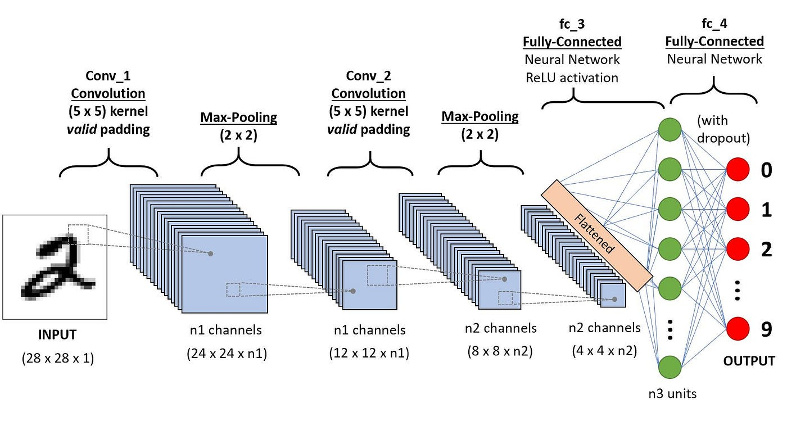

Le CNN (Convolutional Neural Networks) sono reti neurali utilizzate soprattutto per l’elaborazione delle immagini. Sono nate per superare i limiti delle normali reti neurali quando devono lavorare con immagini ad alta risoluzione.
Le CNN funzionano analizzando l’immagine in modo gerarchico:
- i primi strati riconoscono caratteristiche semplici come bordi e linee;
- gli strati successivi combinano queste informazioni per riconoscere forme più complesse;
- gli ultimi strati riescono a identificare oggetti completi.
Strati convoluzionali
Applicano la convoluzione tramite piccoli filtri chiamati kernel. I filtri scorrono sull’immagine ed estraggono caratteristiche importanti come bordi, linee e angoli. Ogni filtro produce una feature map, cioè una rappresentazione dell’immagine che evidenzia una certa caratteristica.
Strati di pooling
Servono a ridurre la dimensionalità delle feature map mantenendo solo le informazioni più importanti. I principali tipi sono:
- Max Pooling: prende il valore massimo;
- Average Pooling: prende la media.
I vantaggi del pooling sono: riduzione della memoria usata; addestramento più veloce; minore overfitting; maggiore robustezza ai disturbi.
Flatten e classificazione finale
Dopo convoluzione e pooling, i dati vengono trasformati in un vettore tramite il flatten e inviati a una rete neurale finale che esegue la classificazione. Per ottenere probabilità sulle classi si usa spesso la funzione Softmax.